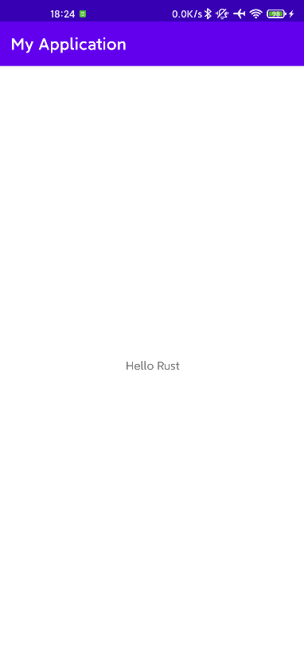

前言
继上一篇用 Rust 开发 iOS 开发折腾之后，我又折腾起 Android 了。
最开始我是先从 Android 上下手的，不过一直没成功，直到最近才成功了。
本文默认你已经把 Rust 安装好了。注意需要使用 stable channel ，我之前使用的是 nightly 所以一直失败。
nightly channel 会报 dl_iterate_phdr can't find 错误，这个错误一直误导了我，我一直以为是链接上的问题，所以折腾了很久。
直到我换了一台电脑试了一下，居然成功了，才发现使用的 channel 是不一样的。
添加架构支持
按照在 iOS 上的经验，这里需要添加对应架构的支持，如下所示
1
2
3
4
|
rustup target add aarch64-linux-android # arm64
rustup target add armv7-linux-androideabi # arm
rustup target add x86_64-linux-android # x86_64
rustup target add i686-linux-android # x86
|
新建一个Android工程配置rust插件
新建 Android 项目就不说了，这个例子会使用mozilla/rust-android-gradle这个插件来进行辅助开发，所以需要说一说插件的配置。在项目的 build.gradle 中加入如下配置
1
2
3
4
5
6
7
8
9
10
|
buildscript {
repositories {
maven {
url "https://plugins.gradle.org/m2/"
}
}
dependencies {
classpath 'org.mozilla.rust-android-gradle:plugin:0.9.0'
}
}
|
接着在 app module 中的 build.gradle 中加入如下配置
1
2
3
4
5
6
7
8
9
10
11
12
13
14
15
16
17
18
19
20
21
22
23
24
25
|
plugins {
id 'com.android.application'
id 'kotlin-android'
id 'org.mozilla.rust-android-gradle.rust-android' // 新添加的
}
// 配置rust
cargo {
module = "./rust" // 配置rust 所在的路径，也就是Cargo.toml所在的目录
targets = ["arm64"] // 配置需要编译的架构
libname = "rust" // 编译之后so的名字，这里需要和Cargo.toml 中lib.name一致
}
// 自动编译rust库
afterEvaluate {
android.applicationVariants.all { variant ->
def productFlavor = ""
variant.productFlavors.each {
productFlavor += "${it.name.capitalize()}"
}
def buildType = "${variant.buildType.name.capitalize()}"
tasks["generate${productFlavor}${buildType}Assets"].dependsOn(tasks["cargoBuild"])
}
}
|
我们现在还没有创建 Rust 的项目，这里先把配置都先写上来了。
创建Rust库
Android 项目创建好之后，就可以创建 Rust 的库了
1
2
|
cd MyApplication/app # 根据上面的配置我们的rust在app下
cargo new rust --lib # 创建库项目，加上--lib
|
添加JNI依赖
由于我们需要在 Kotlin 和 Rust 之间互相调用，所以还需要依赖 jni 这个 crate ，并且我们需要生成的是动态库
1
2
3
4
5
|
[dependencies]
jni = "0.19.0" # 添加jni依赖
[lib]
crate_type = ["dylib"] # dylib 表示的是动态库
|
编写Kotlin代码
从 Kotlin 中调用 Rust 代码和调用 C/C++ 代码一样，先要把对应的 so 加载进来，并且需要把要调用的额函数声明为 external ， Java 就是 native 。
接着就是调用了 Rust 函数了，然后把返回的字符串显示在 TextView 中。
1
2
3
4
5
6
7
8
9
10
11
12
13
14
15
16
17
18
19
20
|
class MainActivity : AppCompatActivity() {
private lateinit var binding: ActivityMainBinding
override fun onCreate(savedInstanceState: Bundle?) {
super.onCreate(savedInstanceState)
binding = ActivityMainBinding.inflate(layoutInflater)
setContentView(binding.root)
binding.sampleText.text = stringFromJNI() //显示从Rust中返回的字符串到TextView中
}
external fun stringFromJNI(): String
companion object {
init {
System.loadLibrary("rust") //加载librust.so
}
}
}
|
编写Rust代码
上一步我们编写好了 Kotlin 代码，接下来就需要实现对应的 Rust 函数了。
根据 JNI 静态绑定的规则， Rust 中的函数名需要使用 Java_+包名_+类名_+函数名 所以 Kotlin 中对应的 Rust 的函数名为 Java_com_example_myapplication_MainActivity_stringFromJNI 。
我们需要函数名不被处理成别的这样才能被找到，所以需要加上 #[no_mangle] ，并且不采用 snake_case 进行命名，所以还要加上 #[allow(non_snake_case)]
1
2
3
4
5
6
7
8
9
10
11
12
13
14
15
|
extern crate jni;
use jni::objects::{JObject};
use jni::sys::jstring;
use jni::JNIEnv;
#[no_mangle]
#[allow(non_snake_case)]
pub extern "C" fn Java_com_example_myapplication_MainActivity_stringFromJNI(
env: JNIEnv,
_: JObject,
) -> jstring {
let output = env.new_string("Hello Rust".to_owned()).unwrap();
output.into_inner()
}
|
运行效果
代码都编写完了，点击运行得到如下效果

参考